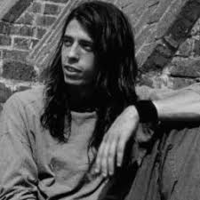

Dave Grohl

Early life
David Eric Grohl was born on January 14, 1969, in Warren, Ohio, the son of teacher Virginia Jean (née Hanlon) and newswriter James Harper Grohl (1938–2014). He is of German, Irish, and Slovak descent. When he was a child, Grohl's family moved to Springfield, Virginia. When Grohl was seven, his parents divorced, and he subsequently grew up with his mother. At the age of 12, he began learning to play guitar. He grew tired of lessons and instead taught himself, and he eventually began playing in bands with friends. At that age, "I was going in the direction of faster, louder, darker while my sister, Lisa, three years older, was getting seriously into new wave territory. We'd meet in the middle sometimes with Bowie and Siouxsie And The Banshees". At 13, Grohl and his sister spent the summer in Evanston, Illinois, at their cousin Tracy's house. Tracy introduced them to punk rock by taking the pair to shows by a variety of punk bands. His first concert was Naked Raygun at The Cubby Bear in Chicago in 1982 when he was 13 years old. Grohl recalled, "From then on we were totally punk. We went home and bought Maximumrocknroll and tried to figure it all out."
In Virginia, Grohl attended Thomas Jefferson High School as a freshman. He was elected vice president of his freshman class and in that capacity would manage to play bits of songs by punk bands like Circle Jerks and Bad Brains over the school intercom before his morning announcements. Grohl's mother decided that he should transfer to Bishop Ireton High School in Alexandria because his cannabis use was negatively impacting his grades. He stayed there for two years, beginning with a repeat of his first year. After his second year, he transferred yet again to Annandale High School. While in high school, Grohl played in several local bands, including a stint as guitarist in a band called Freak Baby. It was during this period that Grohl taught himself to play drums. When Freak Baby kicked out its bass player, Grohl decided to switch to drums. The reconstituted band renamed themselves Mission Impossible.
In a 2013 interview with Sam Jones, Grohl mentioned he didn't take drumming lessons and instead learned from "listening to Rush records and Punk Rock." Dave mentions drummer Neil Peart and Rush's 2112 album as early influences: "When I got '2112' when I was eight years old, it f***ing changed the direction of my life. I heard the drums. It made me want to become a drummer."
During his developing years as a drummer, Grohl cited John Bonham as his greatest influence, and eventually had Bonham's three-rings symbol tattooed on his wrist. Mission Impossible later rebranded themselves Fast before breaking up, after which Grohl joined the hardcore punk band Dain Bramage in December 1985. Dain Bramage ended in March 1987 when Grohl quit without any warning to join Scream., having produced the I Scream Not Coming Down LP. Many of Grohl's early influences were at the 9:30 Club, a live music venue in Washington, D.C. He said, "I went to the 9:30 Club hundreds of times. I was always so excited to get there, and I was always bummed when it closed. I spent my teenage years at the club and saw some shows that changed my life." Grohl said in an interview with The Guardian, "They don't understand that when I was 15 and had Zen Arcade, that's when I decided that I loved this music. For me to do anything else for the sole reason of doing something different would be so contrived."(...)